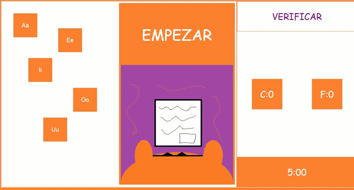

Tengo algunos sellos con letras diferentes para ciertos documentos, aunque son muchos por lo que necesito tu ayuda
lo que tienes que hacer es pasarme los sellos correctos que yo diga, es facil ya que todos estan marcados con las vocales
En mi libro esta las vocales junto con su prenumciacion
CONSEJOS
Practica primero hablando para poder indetificar

Las vocales en inglés, al igual que en español son a, e, i, o, u; hasta aquí es todo igual, pero todo cambia cuando vamos a ver su pronunciación en inglés. No siempre suenan como su transcripción fonética e, incluso, hay casos en que suenan como una vocal neutra representada por el fonema schwa (/ə/), lo que sucede en las sílabas no acentuadas.